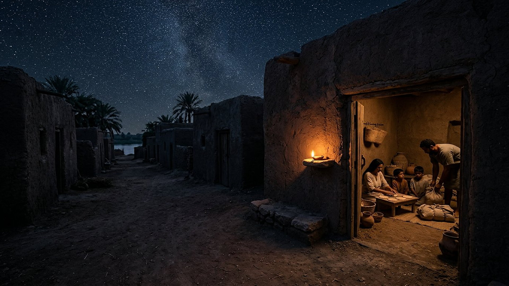
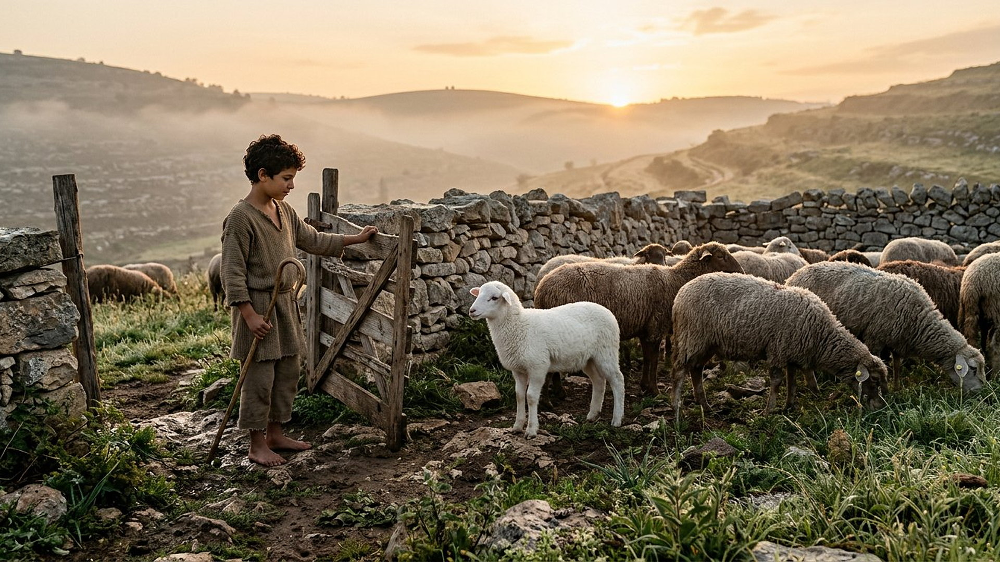
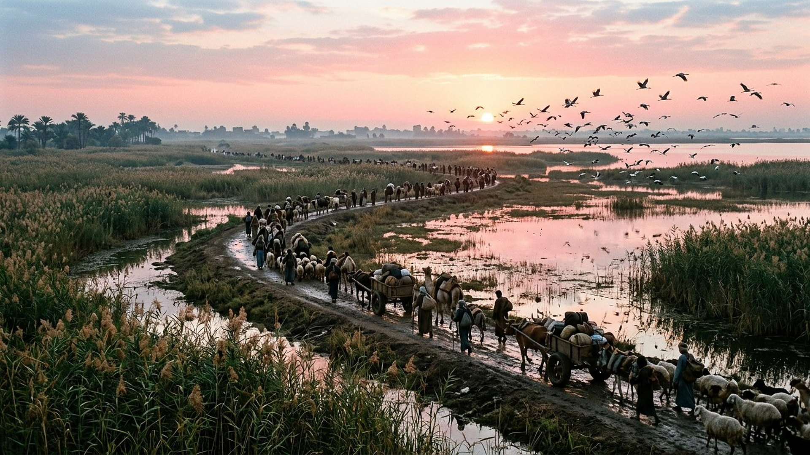

Salle 46 — Exode 12 ACCOMPLIE
La première Pâque : l’agneau et la sortie
« C’est le sacrifice de la Pâque en l’honneur de Jéhovah, qui passa par-dessus les maisons des enfants d’Israël en Égypte. » — Exode 12:27 (d’après Segond 1910)
Reconstitution numérique — la nuit de la préparation : pains sans levain, baluchons prêts, lampe allumée.
Une nuit qui a fait un peuple
Après neuf plaies, le récit de l’Exode décrit une dernière nuit en Égypte : chaque famille hébraïque choisit un agneau sans défaut, le mange rôti « à la hâte », ceinture aux reins et bâton en main, avec des pains sans levain — le temps manque pour faire lever la pâte. Du sang de l’agneau est mis sur les montants des portes ; au milieu de la nuit, le fléau passe, Pharaon presse le départ, et un peuple d’esclaves sort « en plein jour » vers le désert et la mer des Roseaux (Exode 7 à 14, résumé sobre).
Dans la lecture retenue par ce musée, cette première Pâque est la grande image fondatrice de la libération : un agneau dont le sang protège, un repas qui se transmet de génération en génération (« lorsque vos enfants vous diront : que signifie pour vous cet usage ? », Exode 12:26), et, au bout de la lignée des images, Jésus lui-même désigné comme « l’Agneau de Dieu » et « notre Pâque » immolée (Jean 1:29 ; 1 Corinthiens 5:7) — le pont direct vers la salle 44. Le débat historique sur l’ampleur et la date de l’Exode est exposé ci-dessous sans fard : le musée distingue le récit, la mémoire d’Israël et ce que l’archéologie peut contrôler.
Le récit en cinq temps
Avancez dans la nuit, d’une station à l’autre.

Le banc des preuves : une Pierre égyptienne, un récit débattu
FAIT ARCHÉOLOGIQUE
La stèle de Mérenptah : « Israël » nommé en 1208 (EV-55)
La stèle de victoire du pharaon Mérenptah (vers 1208 av. n. è., conservée au Musée du Caire) contient la plus ancienne mention extra-biblique connue d’« Israël », déjà présent comme un peuple en Canaan : « Israël est dévasté, il n’a plus de semence. » Quelle que soit la date qu’on assigne à la Sortie, un peuple nommé Israël existe donc en Canaan à la fin du XIIIe siècle — le point d’ancrage le plus solide dont dispose l’historien.
LECTURE PROPHÉTIQUE
De l’agneau pascal à « notre Pâque »
Le Nouveau Testament relit explicitement la nuit d’Égypte : Jean présente Jésus comme « l’Agneau de Dieu, qui ôte le péché du monde » (Jean 1:29), Paul écrit « Christ, notre Pâque, a été immolé » (1 Corinthiens 5:7), et Pierre parle du « sang précieux, comme d’un agneau sans défaut et sans tache » (1 Pierre 1:19). Le musée suit cette correspondance annoncée-accomplie, qui fait de la salle 46 la grand-mère de la salle 44.
DÉBATTU
L’Exode devant les historiens, honnêtement
Le consensus archéologique actuel ne retrouve ni campement de millions de personnes dans le Sinaï, ni destruction égyptienne correspondant à une sortie massive : beaucoup d’historiens pensent à des groupes plus modestes, à une mémoire fondatrice amplifiée, et débattent des dates (XVe ou XIIIe siècle) comme de l’itinéraire (mer des Roseaux ou mer Rouge). La salle présente le récit biblique et signale ce débat au lieu de prétendre que la stèle de Mérenptah « prouve » l’Exode : elle prouve Israël en Canaan, pas le détail de la Sortie.
Quatre clés pour bien lire la nuit de Pâque
1. Une mémoire qui se transmet à table
« Ce jour sera pour vous un mémorial » (Exode 12:14) : la Pâque institue une pédagogie — les enfants demandent, les parents racontent. Avant d’être un dogme, la Sortie est une histoire répétée chaque année autour d’un repas, ce qui explique sa place centrale dans l’identité d’Israël.
2. Le sang comme signe, pas comme magie
« Je verrai le sang, et je passerai par-dessus vous » (12:13) : le signe distingue ceux qui ont cru l’annonce et agi. Dans la logique du musée — prescience et liberté —, la protection suit une réponse libre à un avertissement, comme aux jours de Noé (salle 35).
3. Une libération qui n’est pas une conquête
Les Hébreux ne renversent pas l’Égypte : ils sont laissés partir, puis poursuivis, puis sauvés sans combattre à la mer des Roseaux. La puissance racontée n’est pas militaire — elle annonce un Dieu qui libère des esclaves plutôt qu’il n’arme des conquérants.
4. La correspondance avec la rançon, sans forcer
Agneau sans défaut, sang qui protège, repas mémorial : les correspondances avec le Christ pascal sont posées par les textes eux-mêmes (1 Corinthiens 5:7), non inventées par le musée. Le visiteur peut les suivre de la salle 46 à la salle 44 et juger de leur force.
Prescience n’est pas fatalité — une porte marquée librement
Chaque famille devait elle-même choisir l’agneau, préparer le repas et marquer sa porte : l’annonce de la nuit ne dispensait personne d’agir. La prescience avertit, la liberté répond — c’est la même grammaire que dans tout le musée, dès sa première nuit de libération.

Salle 44 : la rançon, l’Agneau annoncé · Salle 35 : l’avertissement et la réponse · Salle 29 : après la sortie, le Tabernacle
Écouter la salle
Transcription de la narration
Bienvenue dans cette salle du musée. Vous allez découvrir une maison de terre sous les étoiles, éclairée par une petite lampe, un agneau blanc près d’un enclos de pierres au matin, puis une longue file de voyageurs traversant des marais au lever du soleil. Bonne visite. La visite avance en cinq étapes courtes. Prenez le temps d’observer chaque image et de lire les panneaux : ils présentent une nuit d’attente très ancienne, une Pierre gravée conservée au Musée du Caire, et les débats des historiens.